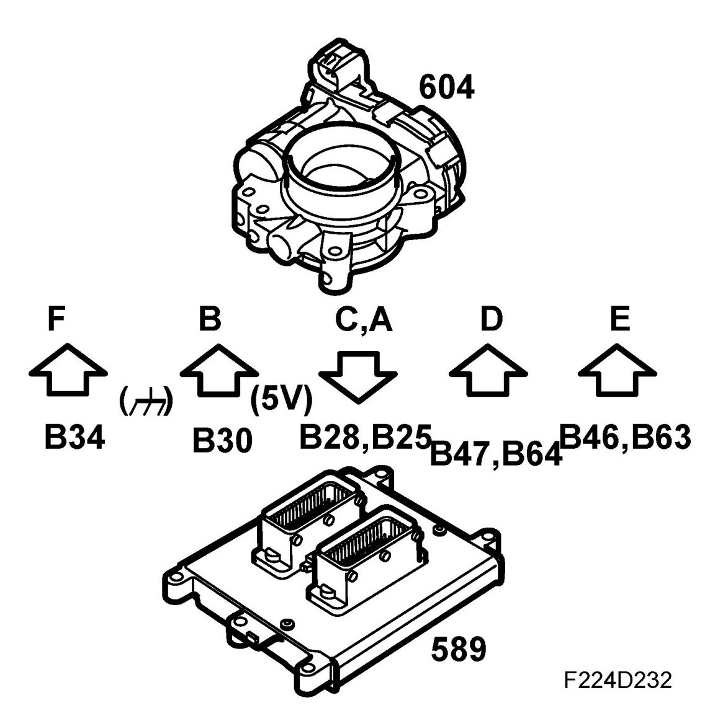
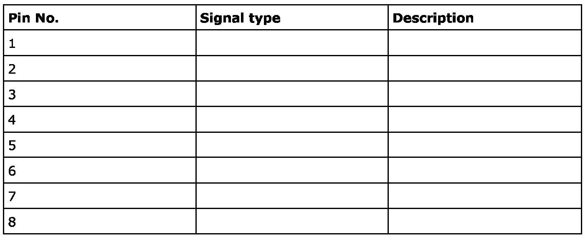
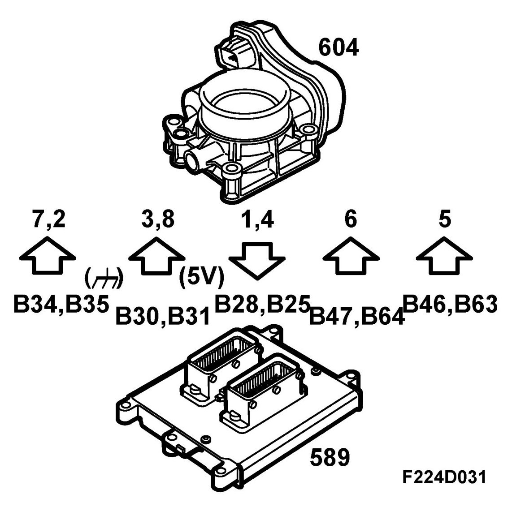
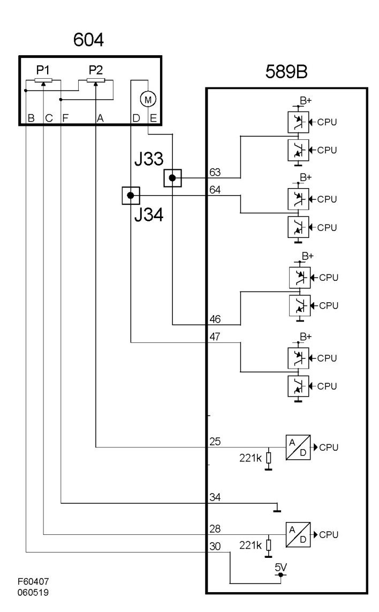

Electronic Throttle Actuator: Description and Operation
Throttle Body Actuator (604), T8
Location
Throttle body actuator (604)
Main task
Airmass control requests a specific airmass/combustion. Throttle control converts this value to a requested value for throttle position sensor 1 and compares this with the actual value for the sensor. The difference generates a throttle motor PWM with a polarity that turns the throttle until the actual value matches the requested one.
When the total requested airmass/combustion for the system has been calculated, first the throttle, and then, if necessary, turbo control make this a reality.
Requested airmass/combustion is corrected by air density before the throttle. Thinner air requires a larger throttle angle to obtain the same airmass/combustion. Density is calculated using the boost pressure and the temperature of the intake air.
The value is then converted to requested voltage for throttle position sensor 1. The throttle motor rotates the throttle so that actual sensor voltage matches the requested one.
The control module then checks that actual airmass/combustion matches that requested. If necessary, throttle position is fine-tuned.
Type

Connection



The throttle is rotated by a brushless throttle motor that is fed 600 Hz PWM from control module pins 64(B), 47(B), 46(B) and 63(B).
The control module can rotate the throttle in either direction by reversing the polarity of the motor. The PWM ratio increases as the throttle moves farther away from the desired value.
Two throttle control sensors are connected to the throttle spindle. The sensors consist of potentiometers that are supplied 5 V from control module pin 30(B) for sensor 1 and 31(B) for sensor 2. They are grounded from control module pins 34(B) and 35(B).
Voltage from sensor 1 is connected to control module pin 28(B) and increases with the throttle position.
Voltage from sensor 2 is connected to control module pin 25(B) and decreases with the throttle position. The total of the two sensor voltages is always approx. 5 V. Voltage from sensor 1 is used by the control module as the value of the actual throttle position.
In the event of a serious fault in throttle control, it is switched off and the control module goes into limp-home mode.